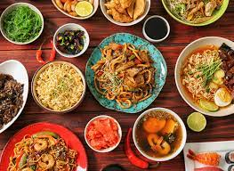

House of Craving

About us
Eazy Diner has been created by a team that is extremely passionate about food, wine and all things fine. As a collective group of Chefs and Hoteliers who have worked in some of the best hotels and restaurants around the world, we were always on the lookout for new dining experiences and exciting cuisines. It is this love and passion for eating and exploring that brought us together to create EazyDiner.
How often do you find yourself wondering, where you should go eat on a special occasion? What are the newest and top eateries in town? What are the things you absolutely must try when visiting a particular restaurant? Can you save some money while still dining at top restaurants of the city?